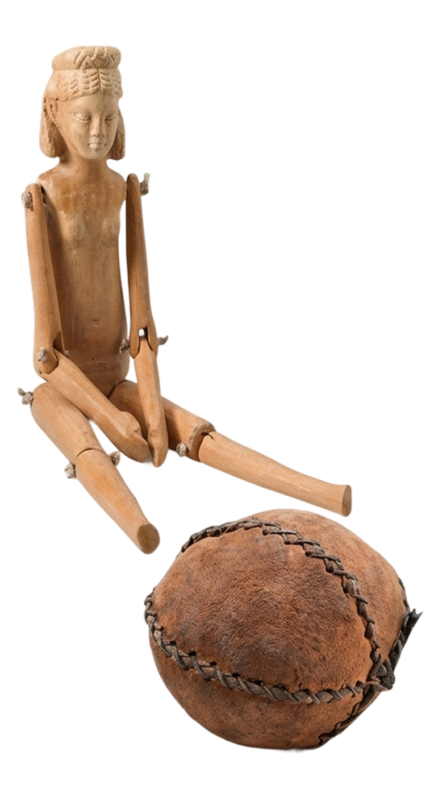
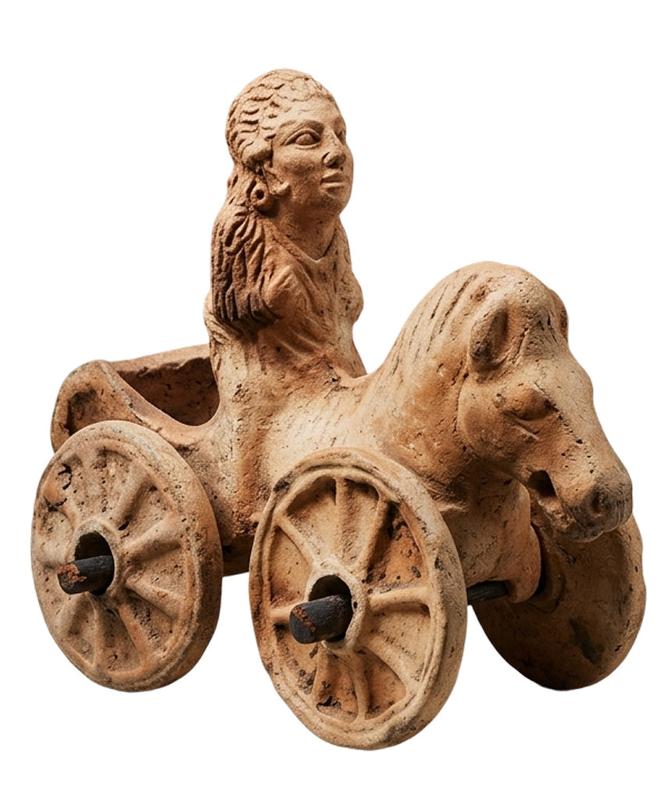
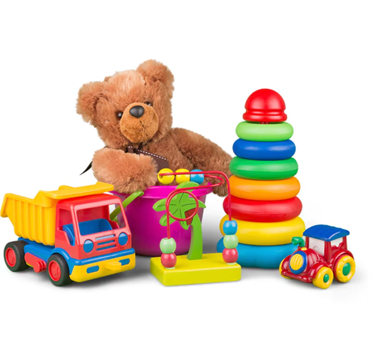

LO STRUMENTO CON CUI L’UOMO
IMPARA A SOGNARE
Che cos'è, dopotutto, un giocattolo? Se guardiamo oltre il legno, la latta o i pixel, scopriamo che un giocattolo è un ponte tra la realtà e l'immaginazione. È il primo strumento con cui l'essere umano impara a conoscere il mondo, a simulare la vita e a dare forma ai propri sogni.

UN LINGUAGGIO UNIVERSALE
Dalle bambole in argilla delle civiltà mesopotamiche ai moderni robot programmabili, il desiderio di giocare non è mai cambiato. Il giocattolo è un oggetto magico che non ha età:
Per il bambino: è un compagno di avventure, un maestro di logica e un rifugio sicuro. Per l'adulto: è un frammento di memoria, un pezzo di design o un oggetto da custodire con cura. Per la storia: è lo specchio della società, della tecnologia e dei costumi di ogni epoca.

IL VALORE DEL RICORDO
Conservare un giocattolo significa proteggere una parte della nostra umanità. In questa sezione del sito, esploreremo come questi "piccoli oggetti" abbiano in realtà influenzato grandi scoperte scientifiche, movimenti artistici e, soprattutto, la crescita di ognuno di noi.
